TVC广告
茶叶
正在连接在线视频…
视频简介
以山间茶田、手工制茶与四季庭院串联品茶体验，通过人物、茶叶与礼盒的镜头衔接，呈现从自然原料到产品展示的东方茶饮视觉。
在快手观看原视频 ↗制作资产
角色资产
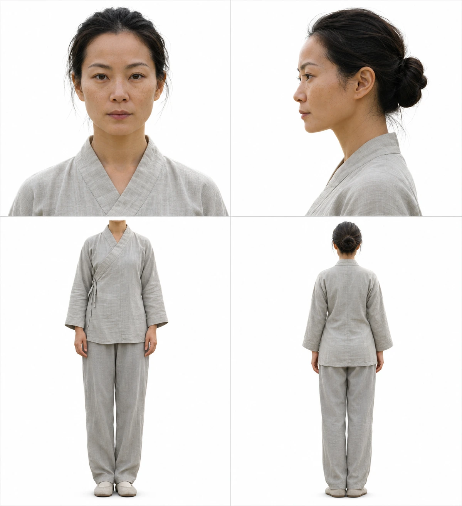
制茶女子
制茶女子的角色视觉设定，用于人物造型与镜头中的外观统一。
场景资产
茶山溪谷
茶山溪谷的场景视觉设定，用于空间布局、光影与镜头背景。
制茶屋
制茶屋的场景视觉设定，用于空间布局、光影与镜头背景。
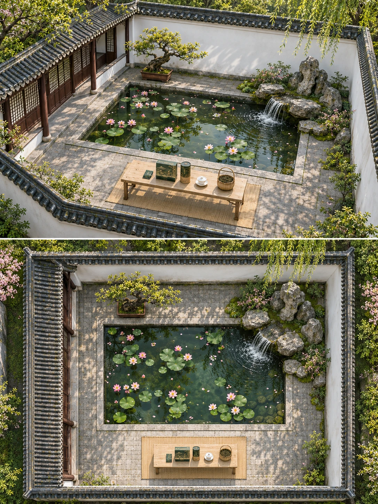
白墙荷池庭院
白墙荷池庭院的场景视觉设定，用于空间布局、光影与镜头背景。
晨雾竹林
晨雾竹林的场景视觉设定，用于空间布局、光影与镜头背景。
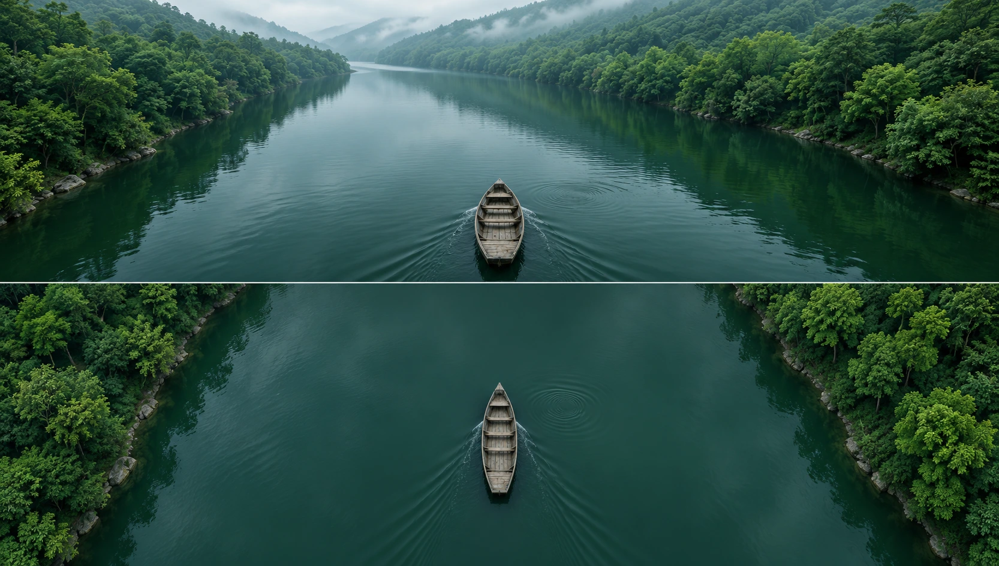
山间水道
山间水道的场景视觉设定，用于空间布局、光影与镜头背景。
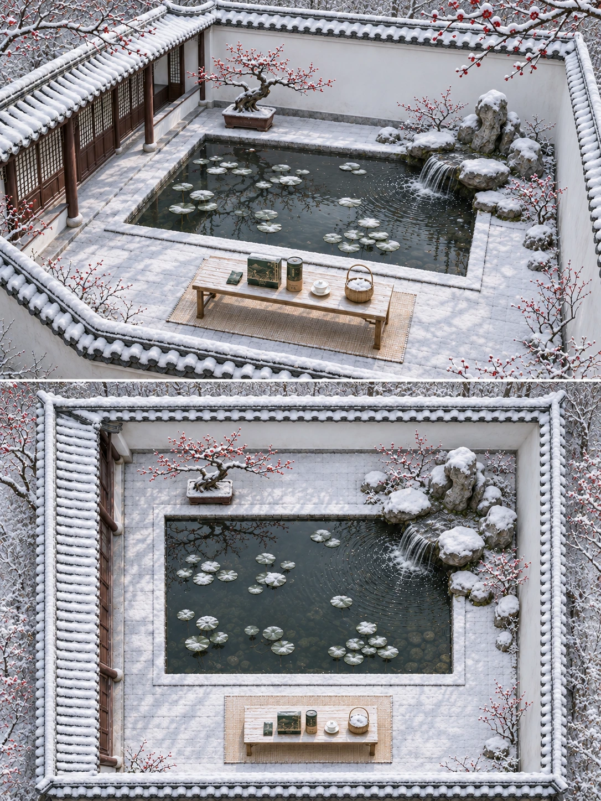
雪中梅花庭院
雪中梅花庭院的场景视觉设定，用于空间布局、光影与镜头背景。
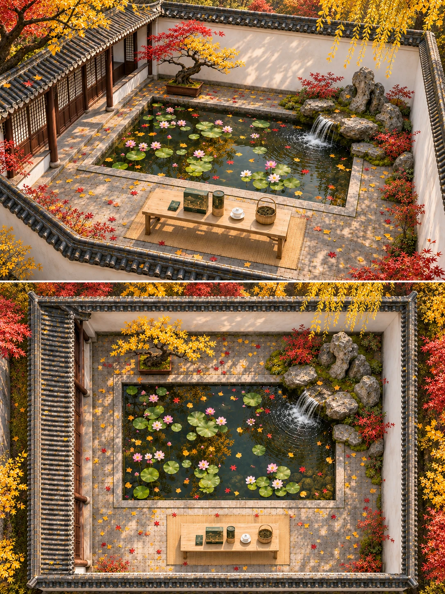
金秋荷池庭院
金秋荷池庭院的场景视觉设定，用于空间布局、光影与镜头背景。
道具资产
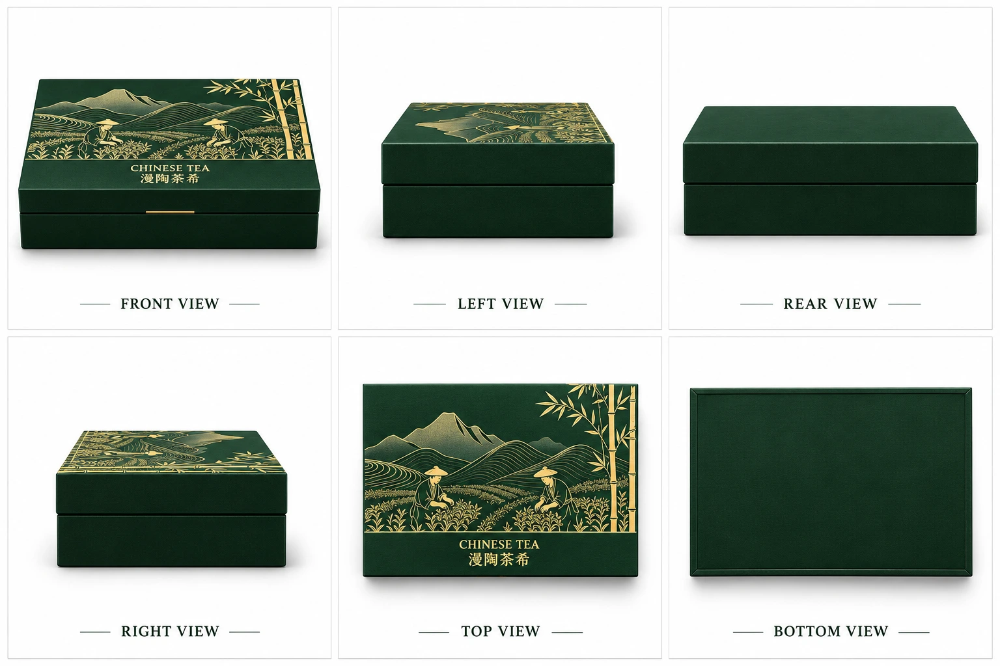
墨绿描金茶礼盒_待校包装字
墨绿描金茶礼盒_待校包装字的道具视觉设定，用于叙事细节与画面中的产品或物件展示。
圆形茶罐
圆形茶罐的道具视觉设定，用于叙事细节与画面中的产品或物件展示。
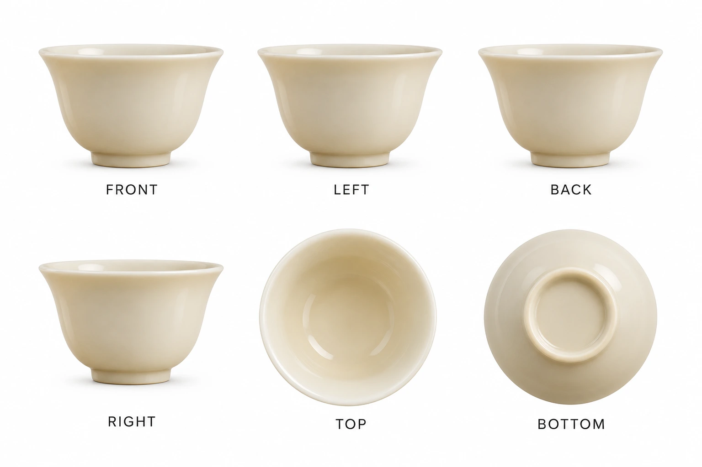
白瓷茶杯
白瓷茶杯的道具视觉设定，用于叙事细节与画面中的产品或物件展示。
旧木舟
旧木舟的道具视觉设定，用于叙事细节与画面中的产品或物件展示。
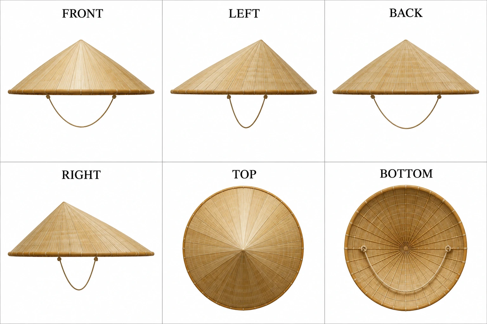
竹编斗笠
竹编斗笠的道具视觉设定，用于叙事细节与画面中的产品或物件展示。
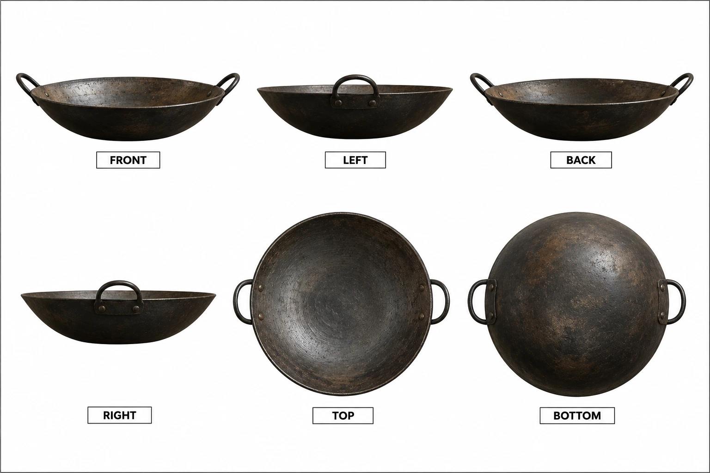
炒茶铁锅
炒茶铁锅的道具视觉设定，用于叙事细节与画面中的产品或物件展示。
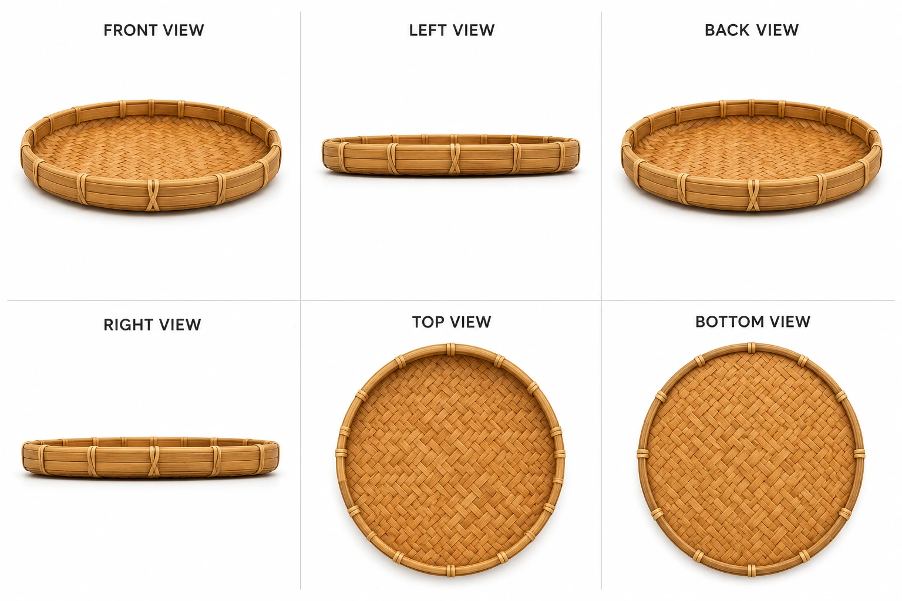
圆形竹筛
圆形竹筛的道具视觉设定，用于叙事细节与画面中的产品或物件展示。
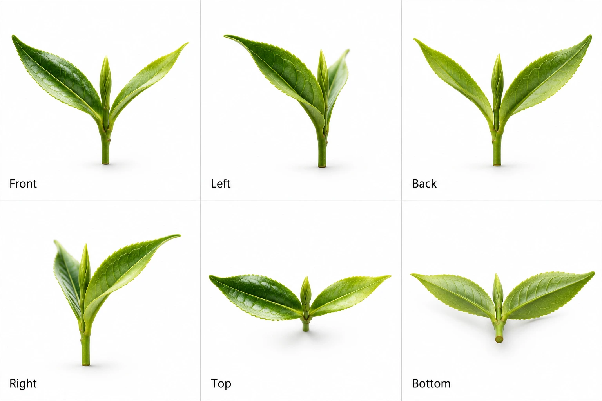
一芽两叶茶梢
一芽两叶茶梢的道具视觉设定，用于叙事细节与画面中的产品或物件展示。
剧本与分镜
01_剧本
# 《茶叶》叙事剧本 画面改编初稿，旁白与原声待听校。 **外景 · 山间茶田与溪流 · 清晨** 山谷浮着薄雾，嫩叶落入溪水，一圈涟漪扩开。灰衣女子坐在溪石上，举起白瓷杯轻抿。她沿茶垄走过，伸手轻触茶梢。 **内景 · 制茶屋** 双手将茶叶撒入铁锅。热气从木案升起，她俯身整理茶叶。镜头从案上散茶移向盛有茶汤的陶盘，茶罐倒影随水纹晃动。 **外景 · 庭院与山水** 茶礼盒、圆罐和茶杯陈列在白墙庭院。荷花、秋叶与白雪先后改变庭景。画面回到茶田与溪石，礼盒置在水边。女子背着斗笠乘木舟沿山间水道前行。晨光穿过竹林，她在竹间举起茶罐。回到白墙庭院，她坐在水景旁，自礼盒前举杯品茶。最后，圆罐立在茶树间，画面失焦收尾。
02_脚本
# 《茶叶》分镜脚本 时间依参考帧定位，精确剪接点与原声待核对。 | 时间（约） | 画面与剪辑 | 资产 | |---|---|---| | 00:00–00:06 | 山雾、溪水跌落石阶，切浮叶涟漪 | 茶山溪谷、嫩茶叶 | | 00:06–00:14 | 女子坐于溪石举杯；侧脸、手持杯与蒸汽特写 | 制茶女子、白瓷杯 | | 00:14–00:18 | 女子走过茶垄，切手指触及嫩芽 | 制茶女子、茶田 | | 00:18–00:26 | 撒茶入锅，切木案与手工理茶 | 制茶屋、铁锅、竹筛、散茶 | | 00:26–00:32 | 茶汤涟漪与圆罐倒影，桌面静物 | 陶盘、圆罐 | | 00:32–00:38 | 庭院陈列切换荷花、秋叶和雪景 | 礼盒、茶罐、杯碟、庭院季节场景 | | 00:38–00:46 | 嫩叶越过茶垄，礼盒落在溪边湿石的产品镜头 | 嫩茶叶、茶田、礼盒、溪谷 | | 00:46–00:52 | 从后方跟拍木舟，女子携斗笠立在船中 | 木舟、斗笠、山间水道 | | 00:52–00:56 | 俯视晨雾竹林，切女子双手举罐 | 竹林、茶罐 | | 00:56–01:02 | 女子坐在庭院水景旁饮茶，礼盒同框 | 水景庭院、礼盒、杯碟 | | 01:02–片尾 | 茶罐置于茶树间，定格后失焦 | 圆形茶罐、茶田 |